PresskitTodo lo que necesitás para escribir o hacer un video sobre HAIN.Everything you need to write about or make a video on HAIN.
HAIN es un roguelike de acción en pixel art inspirado en la mitología del pueblo selk'nam de Tierra del Fuego. Jugás como Kaux, un chico que atraviesa el Hain, la ceremonia de iniciación, y enfrenta a los espíritus que lo ponen a prueba. HAIN is a pixel art action roguelike inspired by the mythology of the Selk'nam people of Tierra del Fuego. You play as Kaux, a boy going through the Hain, the initiation ceremony, facing the spirits that put him to the test.
Cada partida genera un mapa nuevo de salas, enemigos e ítems. Kaux pelea con armas hechas a mano: arco, lanza, espada de piedra y boleadora. Cuando cae, Cenuke lo devuelve a la aldea, donde las plumas que juntó se gastan en mejoras permanentes. A lo largo de cuatro mundos (el Bosque Oscuro, la Montaña Nevada, la Costa y el Bosque Rojo) el jugador descubre fragmentos de la historia, las leyendas y la cosmología selk'nam, que se guardan en el Libro de Kon. Every run generates a new map of rooms, enemies and items. Kaux fights with handcrafted weapons: bow, spear, stone sword and bolas. When he falls, Cenuke brings him back to the village, where the feathers he gathered buy permanent upgrades. Across four worlds (the Dark Forest, the Snowy Mountain, the Coast and the Red Forest) the player uncovers fragments of Selk'nam history, legends and cosmology, all collected in the Book of Kon.
Al completar el Hain aparecen luces rojas en el cielo y los dioses bajan a la tierra. Kaux tiene que enfrentarlos y convencerlos de volver a su lugar. Once the Hain is complete, red lights appear in the sky and the gods come down to earth. Kaux must face them and persuade them to return where they belong.
Los selk'nam vivieron en la Isla Grande de Tierra del Fuego. El Hain era su ceremonia de iniciación masculina: los hombres, con el cuerpo pintado y máscaras, representaban a los espíritus ante los jóvenes que se convertían en klóketen. El sacerdote y etnógrafo Martin Gusinde presenció uno de los últimos Hain en 1923 y lo documentó en su obra. The Selk'nam lived on the Isla Grande of Tierra del Fuego. The Hain was their male initiation ceremony: men with painted bodies and masks played the spirits before the young initiates, who became klóketen. The priest and ethnographer Martin Gusinde witnessed one of the last Hain ceremonies in 1923 and documented it in his work.
HAIN toma como base El mundo espiritual de los selk'nam, de Gusinde. Es una reinterpretación de fantasía oscura, y todo lo que se inventó para el juego aparece marcado como "leyenda de HAIN" para no confundirlo con la tradición. HAIN is based on Gusinde's The Spirit World of the Selk'nam. It is a dark fantasy reinterpretation, and everything invented for the game is labeled as a "HAIN legend" so it is never mistaken for the tradition itself.
Abrir el tráiler en MP4 (1920 × 1080)Open the trailer as MP4 (1920 × 1080)
Podés usar estas imágenes para cubrir HAIN. Hacé clic en cualquiera para abrirla en tamaño completo. Si necesitás otra resolución, escribime.Feel free to use these images to cover HAIN. Click any of them to open it at full size. If you need a different resolution, get in touch.
PNG con fondo transparente. Hacé clic en una imagen para abrirla en tamaño completo.Transparent PNGs. Click an image to open it at full size.
Podés hacer videos y streams de HAIN y monetizarlos. Me encantaría verlos: etiquetame en X.You're welcome to make videos and streams of HAIN and monetize them. I'd love to see them, so tag me on X.
Para entrevistas, claves de prensa o material en alta resolución:For interviews, press keys or high-resolution assets: